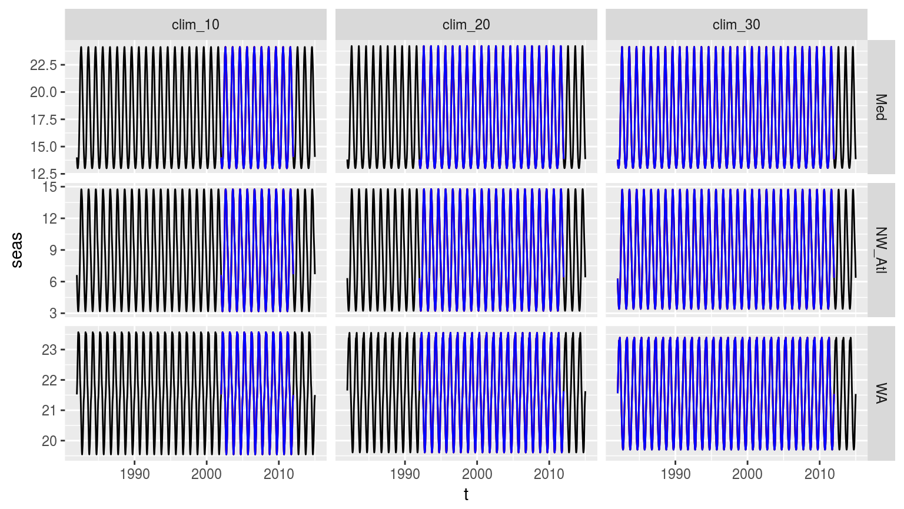
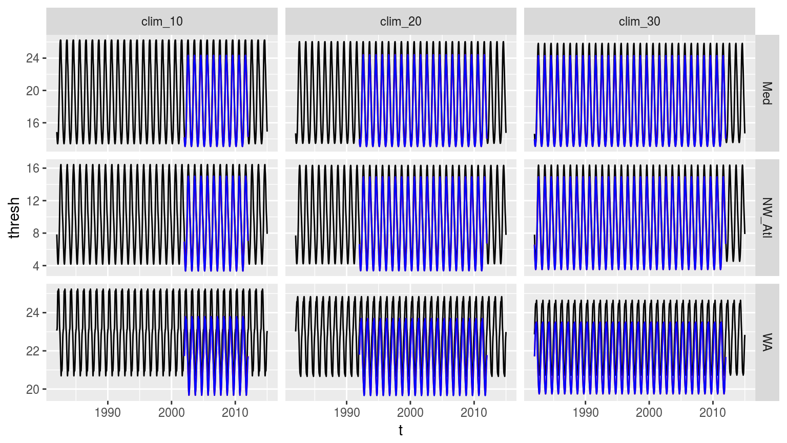

time_series_duration.RmdThe purpose of this vignette is to lay out, in detail, how one goes about testing a range of variables, and analysing the effects they have on the detection of MHWs. This has a plurality of meanings, which will be discussed at more depth in the following sections.
Two different shortening methodologies are proposed here. The first would be to simply take the last n years in a given time series (e.g. 30, 20, 10) and then compare the detected events in the overlapping period of time. This method will help to address the question of how may longer time series affect the events detected. This is an important consideration and one that needs to be investigated to ascertain how large the effect actually is. The second technique proposed here is re-sampling (AJS has used 100 re-samples, as seen https://robwschlegel.github.io/MHWdetection/articles/Short_climatologies.html, which can be increased if desired). The issue with re-sampling the time series at the three different lengths is that it will prevent direct comparison of the results. Rather, re-sampling the time series in this way is useful for the comparison of events in the same time series detected with differing climatologies produced via the aforementioned re-sampling technique.
And that is how this vignette will break down. The first very straightforward investigation will simply be to quantify how much the detected events change when historic data is neglected. The second, much longer investigation will then look into best practices on how to consistently detect events when time series are not of optimal length. As part of this the following measurement metrics will be quantified:
A third possible type of time series shortening to look into would be rather than re-sampling the shorter (e.g. 10 and 20 year) time series, to incrementally calculate climatologies by moving the 10 or 20 year window forward one year at a time. And then quantify how this particular choice of historic data affects event detection.
Finally, this brings us to the direct consideration of the inherent decadal trend in the time series themselves. Ultimately, this tends to come out as the primary driver for much of the event detection changes over time (Oliver et al. 2018). First prize for all of this research would be to develop an equation (model) that could look at a time series and determine for the user how best to calculate a climatology. It seems to me that an important ingredient must be the decadal (or annual) trend. So one would then need to take into account everything learned from the methodologies proposed above and investigate what relationship decadal trends have with whatever may be found. It would be somewhat poetic if this could be used as a variable for the better detection of events.
In this section we will compare the detection of events when we simply nip off the earlier decades in the three pre-package time series in heatwaveR.
library(tidyverse)
library(broom)
library(heatwaveR)
library(lubridate) # This is intentionally activated after data.table
library(fasttime)
library(ggpubr)
library(boot)In order to control more tightly for the effect of shorter time series I am going to standardise the length of the 30 year time series as well. Because the built in time series are actually 32 years long I am going to nip off those last two years. The WMO recommends that climatologies be 30 years in length, starting on the first year of a decade (e.g. 1981). Unfortunately the OISST data from which the built-in time series have been drawn only start in 1982. For this reason we will set the 30 year climatology period as being from 1982 – 2011. To match this period, but shorter, 2011 will be taken as the last year for comparison and the data from 2012 onward will not be used.
# First put all of the data together and create a site column
sst_ALL <- rbind(sst_Med, sst_NW_Atl, sst_WA) %>%
mutate(site = rep(c("Med", "NW_Atl", "WA"), each = 12053))
# Then calculate the different clims
sst_ALL_clim <- sst_ALL %>%
nest(-site) %>%
mutate(clim_10 = map(data, ts2clm, climatologyPeriod = c("2002-01-01", "2011-12-31")),
clim_20 = map(data, ts2clm, climatologyPeriod = c("1992-01-01", "2011-12-31")),
clim_30 = map(data, ts2clm, climatologyPeriod = c("1982-01-01", "2011-12-31"))) %>%
select(-data) %>%
gather(key = decades, value = output, -site) %>%
unnest()
# Quick peak at mean seas clims
sst_ALL_clim %>%
group_by(site, decades) %>%
summarise(seas_mean = mean(seas))## # A tibble: 9 x 3
## # Groups: site [?]
## site decades seas_mean
## <chr> <chr> <dbl>
## 1 Med clim_10 18.1
## 2 Med clim_20 17.8
## 3 Med clim_30 17.7
## 4 NW_Atl clim_10 8.68
## 5 NW_Atl clim_20 8.57
## 6 NW_Atl clim_30 8.58
## 7 WA clim_10 21.6
## 8 WA clim_20 21.6
## 9 WA clim_30 21.5Quickly take note of the fact that for all three time series, the mean seasonal climatology becomes warmer the shorter (closer to the present) the period used is. This is to be expected due to the overall warming signal present throughout the worlds seas and oceans. We’ll return to the impact of this phenomenon later.
Now let’s compare the results of the events detected in the final decade of each time series using the different climatologies calculated using 1, 2, or 3 decades.
# A clomp of functions used below
# Written out here for tidiness/convenience
# Calculate only events
detect_event_event <- function(df, y = temp){
ts_y <- eval(substitute(y), df)
df$temp <- ts_y
res <- detect_event(df)$event
return(res)
}
# Run an ANOVA on each metric of the combined event results and get the p-value
event_aov_p <- function(df){
aov_models <- df[ , -grep("decades", names(df))] %>%
map(~ aov(.x ~ df$decades)) %>%
map_dfr(~ broom::tidy(.), .id = 'metric') %>%
mutate(p.value = round(p.value, 5)) %>%
filter(term != "Residuals") %>%
select(metric, p.value)
return(aov_models)
}
# Run an ANOVA on each metric of the combined event results and get CI
event_aov_CI <- function(df){
aov_models <- df[ , -grep("decades", names(df))] %>%
map(~ aov(.x ~ df$decades)) %>%
map_dfr(~ confint_tidy(., parm = ), .id = 'metric') %>%
mutate(decades = rep(c("clim_10", "clim_20", "clim_30"), nrow(.)/3)) %>%
select(metric, decades, everything())
return(aov_models)
}
# A particular summary output
event_output <- function(df){
res <- df %>%
group_by(decades) %>%
select(-event_no) %>%
summarise_all(c("mean", "sd"))
return(res)
}# Calculate events and filter only those from 2002 -- 2011
sst_ALL_event <- sst_ALL_clim %>%
group_by(site, decades) %>%
nest() %>%
mutate(res = map(data, detect_event_event)) %>%
select(-data) %>%
unnest(res) %>%
filter(date_start >= "2002-01-01", date_end <= "2011-12-31") %>%
select(-c(index_start:index_end, date_start:date_end))
# ANOVA p
sst_ALL_aov_p <- sst_ALL_event %>%
nest(-site) %>%
mutate(res = map(data, event_aov_p)) %>%
select(-data) %>%
unnest() %>%
spread(key = metric, value = p.value) %>%
select(names(select(sst_ALL_event, -decades, -event_no)))
sst_ALL_aov_p## # A tibble: 3 x 16
## site duration intensity_mean intensity_max intensity_var
## <chr> <dbl> <dbl> <dbl> <dbl>
## 1 Med 0.0776 0.343 0.202 0.0916
## 2 NW_Atl 0.382 0.338 0.424 0.887
## 3 WA 0.977 0.731 0.979 0.989
## # ... with 11 more variables: intensity_cumulative <dbl>,
## # intensity_mean_relThresh <dbl>, intensity_max_relThresh <dbl>,
## # intensity_var_relThresh <dbl>, intensity_cumulative_relThresh <dbl>,
## # intensity_mean_abs <dbl>, intensity_max_abs <dbl>,
## # intensity_var_abs <dbl>, intensity_cumulative_abs <dbl>,
## # rate_onset <dbl>, rate_decline <dbl># ANOVA CI
sst_ALL_aov_CI <- sst_ALL_event %>%
nest(-site) %>%
mutate(res = map(data, event_aov_CI)) %>%
select(-data) %>%
unnest() %>%
filter(metric != "event_no")
sst_ALL_aov_CI## # A tibble: 135 x 5
## site metric decades conf.low conf.high
## <chr> <chr> <chr> <dbl> <dbl>
## 1 Med duration clim_10 7.09 12.6
## 2 Med duration clim_20 -2.18 5.22
## 3 Med duration clim_30 0.472 7.87
## 4 Med intensity_mean clim_10 1.58 2.24
## 5 Med intensity_mean clim_20 -0.293 0.598
## 6 Med intensity_mean clim_30 -0.117 0.774
## 7 Med intensity_max clim_10 1.89 2.74
## 8 Med intensity_max clim_20 -0.367 0.778
## 9 Med intensity_max clim_30 -0.0603 1.08
## 10 Med intensity_var clim_10 0.201 0.361
## # ... with 125 more rowsWhereas the results for the different metrics do differ, they are not significantly different for any of the three time series.
Now that we know that the detected events do not differ significantly, we still want to know by what amounts they do differ. This information will then later be used during the re-sampling to see if this gap can be reduced through the clever use of statistics.
sst_ALL_out <- sst_ALL_event %>%
nest(-site) %>%
mutate(res = map(data, event_output)) %>%
select(-data) %>%
unnest()
sst_ALL_out## # A tibble: 9 x 32
## site decades duration_mean intensity_mean_mean intensity_max_mean
## <chr> <chr> <dbl> <dbl> <dbl>
## 1 Med clim_10 9.83 1.91 2.32
## 2 Med clim_20 11.3 2.06 2.52
## 3 Med clim_30 14 2.23 2.83
## 4 NW_Atl clim_10 7.62 1.79 2.12
## 5 NW_Atl clim_20 9.44 1.87 2.25
## 6 NW_Atl clim_30 8.84 1.98 2.38
## 7 WA clim_10 14.9 1.77 2.37
## 8 WA clim_20 16.1 1.69 2.32
## 9 WA clim_30 15.6 1.72 2.32
## # ... with 27 more variables: intensity_var_mean <dbl>,
## # intensity_cumulative_mean <dbl>, intensity_mean_relThresh_mean <dbl>,
## # intensity_max_relThresh_mean <dbl>,
## # intensity_var_relThresh_mean <dbl>,
## # intensity_cumulative_relThresh_mean <dbl>,
## # intensity_mean_abs_mean <dbl>, intensity_max_abs_mean <dbl>,
## # intensity_var_abs_mean <dbl>, intensity_cumulative_abs_mean <dbl>,
## # rate_onset_mean <dbl>, rate_decline_mean <dbl>, duration_sd <dbl>,
## # intensity_mean_sd <dbl>, intensity_max_sd <dbl>,
## # intensity_var_sd <dbl>, intensity_cumulative_sd <dbl>,
## # intensity_mean_relThresh_sd <dbl>, intensity_max_relThresh_sd <dbl>,
## # intensity_var_relThresh_sd <dbl>,
## # intensity_cumulative_relThresh_sd <dbl>, intensity_mean_abs_sd <dbl>,
## # intensity_max_abs_sd <dbl>, intensity_var_abs_sd <dbl>,
## # intensity_cumulative_abs_sd <dbl>, rate_onset_sd <dbl>,
## # rate_decline_sd <dbl># Create long data.frames for plotting
# Mean values
sst_ALL_out_mean_long <- sst_ALL_out %>%
select(site:rate_decline_mean)
colnames(sst_ALL_out_mean_long) <- gsub("_mean", "", names(sst_ALL_out_mean_long))
sst_ALL_out_mean_long <- sst_ALL_out_mean_long %>%
gather(variable, value, -site, -decades)
# SD values
sst_ALL_out_sd_long <- sst_ALL_out %>%
select(site, decades, duration_sd:rate_decline_sd)
colnames(sst_ALL_out_sd_long) <- gsub("_sd", "", names(sst_ALL_out_sd_long))
sst_ALL_out_sd_long <- sst_ALL_out_sd_long %>%
gather(variable, value, -site, -decades)
# Steek'm
sst_ALL_out_mean_long$value_sd <- sst_ALL_out_sd_long$value
# Visuals... man
ggplot(sst_ALL_out_mean_long, aes(x = site, y = value, fill = decades)) +
geom_bar(stat = "identity", position = position_dodge()) +
geom_errorbar(aes(ymin = value - value_sd, ymax = value + value_sd),
stat = "identity", position = position_dodge(0.9), width = 0.3) +
facet_wrap(~variable, scales = "free_y")Bar plots of the mean values for each metric of the events detected using one of three different climatology periods. Error bars show the standard deviation of the mean values.
# Long data.frame for plotting
sst_ALL_event_long <- sst_ALL_event %>%
select(-event_no) %>%
gather(variable, value, -site, -decades)
# Visualisations
# Notches are unhelpful and noisey here
ggplot(sst_ALL_event_long, aes(x = site, y = value)) +
geom_boxplot(aes(fill = decades), position = "dodge", notch = FALSE) +
facet_wrap(~variable, scales = "free_y")Boxplots showing the spread of the values for the metrics of the events detected with the three different clim periods.
CI_plot_1 <- ggplot(sst_ALL_aov_CI, aes(x = site)) +
geom_errorbar(position = position_dodge(0.9), width = 0.5,
aes(ymin = conf.low, ymax = conf.high, linetype = decades)) +
facet_wrap(~metric, scales = "free_y")
CI_plot_1Confidence intervals of the different metrics for the three different clim periods from the population mean.
The difference between the three different time series is intriguing. The NW_Atl events have less cumulative intensity when one only uses the final decade for the climatology, but there is little difference between two and three decades. The Med data changed over time in a more predictable, linear fashion. Strangest was that the WA data change very little depending on the number of decades used for the climatology, and that the trend displayed by the other two time series is reversed for some of the metrics in the WA time series. This is most certainly due to that one huge event near the end.
When we look at the confidence intervals (CI) we see that the max and mean intensities calculated from the 10 year clim periods may be significantly different from those calculated at the 20 and 30 year period. But that the 20 and 30 year values are remarkably similar. This is a good indication that 10 years is too short, but that 20 years appears to be acceptable in place of the (still preferable) 30 year period.
(RWS: Could there be a relationship between normality and change due to decade of choice?)
With these benchmarks established, we will now move on to re-sampling to see if the effect of a shorter time series on the detected climatology can be mitigated.
With the effect of shortening time series on the detection of events quantified, we will now perform re-sampling to simulate one hundred 10, 20, and 30 year time series in order to quantify how much more variance one may expect from shorter time series. This will be measured through the following statistics:
The secondary goal of this step in this section of the methodology is to also identify how much more accurate this re-sampling may be able to make the climatologies generated from shorter time series as a technique for addressing this potential short-coming (yes, that was a pun).
sst_repl <- function(sst) {
sst.sampled <- sst %>%
mutate(sample_10 = map(data, sample_n, 10, replace = TRUE),
sample_20 = map(data, sample_n, 20, replace = TRUE),
sample_30 = map(data, sample_n, 30, replace = TRUE))
return(sst.sampled)
}
parse_date_sst <- function(data, rep_col, len) {
parsed <- data %>%
mutate(id = rep_col,
y = year(t),
m = month(t),
d = day(t)) %>%
group_by(site, rep, doy) %>%
mutate(y = seq(2012-len, by = 1, len = len)) %>%
mutate(t = as.Date(fastPOSIXct(paste(y, m, d, sep = "-")))) %>%
select(-y, -m, -d) %>%
na.omit() # because of complications due to leap years
return(parsed)
}sst_ALL_doy <- sst_ALL %>%
mutate(doy = yday(as.Date(t))) %>%
nest(-site, -doy)
sst_ALL_repl <- purrr::rerun(100, sst_repl(sst_ALL_doy)) %>%
map_df(as.data.frame, .id = "rep")
sample_10 <- sst_ALL_repl %>%
unnest(sample_10) %>%
parse_date_sst("sample_10", len = 10) %>%
group_by(site, id, rep) %>%
nest() %>%
mutate(smoothed = map(data, function(x) ts2clm(x, climatologyPeriod = c("2002-01-01", "2011-12-31")))) %>%
unnest(smoothed)
sample_20 <- sst_ALL_repl %>%
unnest(sample_20) %>%
parse_date_sst("sample_20", len = 20) %>%
group_by(site, id, rep) %>%
nest() %>%
mutate(smoothed = map(data, function(x) ts2clm(x, climatologyPeriod = c("1992-01-01", "2011-12-31")))) %>%
unnest(smoothed)
sample_30 <- sst_ALL_repl %>%
unnest(sample_30) %>%
parse_date_sst("sample_30", len = 30) %>%
group_by(site, id, rep) %>%
nest() %>%
mutate(smoothed = map(data, function(x) ts2clm(x, climatologyPeriod = c("1982-01-01", "2011-12-31")))) %>%
unnest(smoothed)
sst_ALL_smooth <- bind_rows(sample_10, sample_20, sample_30)
save(sst_ALL_smooth, file = "data/sst_ALL_smooth.Rdata")# This file is not uploaded to GitHub as it is too large
# One must first run the above code locally to generate and save the file
load("data/sst_ALL_smooth.Rdata")# for each day-of-year (doy) in the climatology, calculate the SD of the climatological means of the 100 re-samplings;
sst_ALL_sd <- sst_ALL_smooth %>%
group_by(site, id, doy) %>%
summarise(seas_sd = sd(seas),
thresh_sd = sd(thresh),
var_sd = sd(var)) %>%
gather(variable, value, -site, -id, -doy)
ggplot(sst_ALL_sd, aes(x = doy, y = value)) +
geom_line(aes(colour = id)) +
facet_grid(variable ~ site)Line plot showing the standard deviation (sd) of each day of the year (doy) for the three different sites. The line colours denote the number of samples used for each doy. All re-samples were run 100 times, thus n = 100 for each sd of each doy for each id.
Hmmm…. Interesting how the seasonal and threshold signals of increased summer variance comes through so nicely in the Med data the fewer samples are taken. The other two time series produce somewhat strange signals. We can see that the 30 year, and to a lesser extent 20 year, re-sampled time series are much smoother than the 10 year re-sample. The WA data are either very strange, or very exposed to particularly intense events.
sst_ALL_sd %>%
group_by(site, variable, id) %>%
summarise(sd_mean = mean(value))## # A tibble: 27 x 4
## # Groups: site, variable [?]
## site variable id sd_mean
## <chr> <chr> <chr> <dbl>
## 1 Med seas_sd sample_10 0.0565
## 2 Med seas_sd sample_20 0.0393
## 3 Med seas_sd sample_30 0.0328
## 4 Med thresh_sd sample_10 0.0969
## 5 Med thresh_sd sample_20 0.0706
## 6 Med thresh_sd sample_30 0.0593
## 7 Med var_sd sample_10 0.0397
## 8 Med var_sd sample_20 0.0283
## 9 Med var_sd sample_30 0.0235
## 10 NW_Atl seas_sd sample_10 0.0621
## # ... with 17 more rowsA quick glimpse at the overall mean of the SD values for each site and re-sample period shows how similar they are. Actually, there is not a linear relationship between increased re-sample size and decreased variance. That being said, an increased re-sample size does appear to produce a more stable variance profile. Meaning that even though the mean SD for the 10 year re-samples are very similar to the 20 and 30 year re-samples, to an extent this is because the variance is more variable, ultimately flattening itself out somewhat. This may be seen in the figure above how the slight peaks come out for the 10 year samples both above and below the other lines based on larger samples. Afain, this appears almost negligible.
# Base 30 year clims
sst_ALL_clim_base <- sst_ALL_clim %>%
filter(decades == "clim_30") %>%
select(site:doy, seas:var, -decades) %>%
unique()
# For each doy, calculate the RMSE of the re-sampled means relative to the true climatology (i.e. the one produced from the 30-year long time series);
sst_ALL_error <- sst_ALL_smooth %>%
select(site:doy, seas:var) %>%
unique() %>%
left_join(sst_ALL_clim_base, by = c("site", "doy")) %>%
mutate(seas.er = seas.x - seas.y,
thresh.er = thresh.x - thresh.y,
var.er = var.x - var.y)
sst_ALL_RMSE <- sst_ALL_error %>%
group_by(site, id, doy) %>%
summarise(seas_RMSE = sqrt(mean(seas.er^2)),
thresh_RMSE = sqrt(mean(thresh.er^2)),
var_RMSE = sqrt(mean(var.er^2))) %>%
gather(variable, value, -site, -id, -doy)
ggplot(sst_ALL_RMSE, aes(x = doy, y = value)) +
geom_line(aes(colour = id)) +
facet_grid(variable ~ site)Line graph, as above, but now showing the RMSE for each doy for the three different climatology durations.
# It appears as though the actual time series constructed from re-sampling,
# while useful for creating climatologies, are totally deurmekaar
# and do not actually lend themselves to the detection of heatwaves
# Therefore it is necessary to replace the 'temp' values in the smoothes data with the real values
sst_ALL_smooth_real <- sst_ALL_smooth %>%
select(-temp) %>%
left_join(sst_ALL, by = c("site", "t"))# Then caluclate events using the many re-smapled clims on the real temperature data
sst_ALL_smooth_event <- sst_ALL_smooth_real %>%
group_by(site, id, rep) %>%
nest() %>%
mutate(res = map(data, detect_event_event)) %>%
select(-data) %>%
unnest(res) %>%
filter(date_start >= "2002-01-01", date_end <= "2011-12-31") %>%
select(-c(index_start:index_end, date_start:date_end))
save(sst_ALL_smooth_event, file = "data/sst_ALL_smooth_event.Rdata")# This file is not uploaded to GitHub as it is too large
# One must first run the above code locally to generate and save the file
load("data/sst_ALL_smooth_event.Rdata")
# Rename for project-wide consistency
sst_ALL_smooth_event <- sst_ALL_smooth_event %>%
rename(decades = id)# correspondence of detected events when using climatologies calculated from reduced time series vs. when using the full duration time series climatologies.
# ANOVA p
sst_ALL_smooth_aov_p <- sst_ALL_smooth_event %>%
nest(-site) %>%
mutate(res = map(data, event_aov_p)) %>%
select(-data) %>%
unnest() %>%
spread(key = metric, value = p.value) %>%
select(names(select(sst_ALL_event, -decades, -event_no)))
sst_ALL_smooth_aov_p## # A tibble: 3 x 16
## site duration intensity_mean intensity_max intensity_var
## <chr> <dbl> <dbl> <dbl> <dbl>
## 1 Med 0.945 0.194 0.363 0.977
## 2 NW_Atl 0.724 0.0607 0.603 0.310
## 3 WA 0.636 0.488 0.998 0.963
## # ... with 11 more variables: intensity_cumulative <dbl>,
## # intensity_mean_relThresh <dbl>, intensity_max_relThresh <dbl>,
## # intensity_var_relThresh <dbl>, intensity_cumulative_relThresh <dbl>,
## # intensity_mean_abs <dbl>, intensity_max_abs <dbl>,
## # intensity_var_abs <dbl>, intensity_cumulative_abs <dbl>,
## # rate_onset <dbl>, rate_decline <dbl># ANOVA CI
sst_ALL_smooth_aov_CI <- sst_ALL_smooth_event %>%
nest(-site) %>%
mutate(res = map(data, event_aov_CI)) %>%
select(-data) %>%
unnest() %>%
filter(metric != "event_no",
metric != "rep")
sst_ALL_smooth_aov_CI## # A tibble: 135 x 5
## site metric decades conf.low conf.high
## <chr> <chr> <chr> <dbl> <dbl>
## 1 Med duration clim_10 14.2 14.8
## 2 Med duration clim_20 -0.465 0.374
## 3 Med duration clim_30 -0.395 0.447
## 4 Med intensity_mean clim_10 2.05 2.11
## 5 Med intensity_mean clim_20 -0.0128 0.0618
## 6 Med intensity_mean clim_30 -0.00413 0.0706
## 7 Med intensity_max clim_10 2.66 2.73
## 8 Med intensity_max clim_20 -0.0254 0.0773
## 9 Med intensity_max clim_30 -0.0153 0.0877
## 10 Med intensity_var clim_10 0.395 0.410
## # ... with 125 more rows# Long data.frame for plotting
sst_ALL_smooth_event_long <- sst_ALL_smooth_event %>%
select(-event_no) %>%
gather(variable, value, -site, -decades)
# Visualisations
# Notches are unhelpful and noisey here
# ggplot(sst_ALL_smooth_event_long, aes(x = site, y = value)) +
# geom_boxplot(aes(fill = decades), position = "dodge", notch = FALSE) +
# facet_wrap(~variable, scales = "free_y")
# NB: This visualisation is too beefy# CI_plot_2 <- ggplot(sst_ALL_smooth_aov_CI, aes(x = site)) +
# geom_errorbar(position = position_dodge(0.9), width = 0.5,
# aes(ymin = conf.low, ymax = conf.high, linetype = decades)) +
# facet_wrap(~metric, scales = "free_y")
# ggarrange(CI_plot_1, CI_plot_2, ncol = 1, nrow = 2)
ggplot(sst_ALL_aov_CI, aes(x = site)) +
geom_errorbar(position = position_dodge(0.9), width = 0.5, colour = "black",
aes(ymin = conf.low, ymax = conf.high, linetype = decades)) +
geom_errorbar(data = sst_ALL_smooth_aov_CI,
position = position_dodge(0.9), width = 0.5, colour = "red",
aes(ymin = conf.low, ymax = conf.high, linetype = decades)) +
facet_wrap(~metric, scales = "free_y")Confidence intervals of the different metrics for the three different clim periods from the population mean based on the 100 times re-sampling of each clim period in red, and the single sample based on the real data in black.
Though I was not able to run the boxplot, because my computer kept falling over, the CI plot above demonstrates that the difference detected in the first round of experiments (when the real 10, 20, and 30 year baselines were used to generate a single clim each) holds up when we re-sample the clim generation 100 times. The centre around which the CI spread may be found remains very similar between the two experiments, with the distance between the upper and lower limits shrinking drammatically with re-sampling. Through resampling we see that there is a difference between the 10 year clims and the 20 and 30 year clims. But that there is no difference between the 20 and 30 year clims. Next we will use bootstrapping to see if we can lessen this gap.
Bootstrapping differs from re-sampling in that we will be creating new data based on the known distribution of data we will be sampling from. These known distributions are to be the temperature values on each Julian day of the year. The steps to take for a basic bootstraping approach are thus:
So without any further ado.
# First create the base time series for bootstrapping
sst_ALL_clim_10 <- sst_ALL_clim %>%
filter(decades == "clim_10", t >= "2002-01-01", t <= "2011-12-31") %>%
select(site:temp)
sst_ALL_clim_20 <- sst_ALL_clim %>%
filter(decades == "clim_20", t >= "1992-01-01", t <= "2011-12-31") %>%
select(site:temp)
sst_ALL_clim_30 <- sst_ALL_clim %>%
filter(decades == "clim_30", t >= "1982-01-01", t <= "2011-12-31") %>%
select(site:temp)
sst_ALL_clim_period <- rbind(sst_ALL_clim_10, sst_ALL_clim_20, sst_ALL_clim_30)
rm(sst_ALL_clim_10, sst_ALL_clim_20, sst_ALL_clim_30)
# function to obtain a mean for each julian date
mjd <- function(data, indices) {
d <- data[indices,] # allows boot to select sample
res <- mean(d$temp)
return(res)
}
# Function for running a bootstrap within a nest
mjd_boot <- function(df){
res <- boot(data = df, statistic = mjd, R = 100)
res1 <- mean(res$t)
res2 <- res$t0
res3 <- data.frame(boot = res1, real = res2)
return(res3)
}
# Boot the values
sst_ALL_clim_period_boot <- sst_ALL_clim_period %>%
nest(-site, -decades, -doy) %>%
mutate(temp_boot = map(data, mjd_boot)) %>%
unnest(temp_boot) %>%
select(-data) %>%
arrange(site, decades, doy) #%>%
# mutate(t = rep(seq(as.Date("2016-01-01"), as.Date("2016-12-31"), by = "day"), 9))
# Then join these values into the pre-existing data frames
sst_ALL_clim_period <- sst_ALL_clim_period %>%
left_join(sst_ALL_clim_period_boot, by = c("site", "decades", "doy"))
# Create clims from the booted and real mean values per Julian day
sst_ALL_clim_multi <- sst_ALL_clim_period %>%
nest(-site, -decades) %>%
mutate(clim_boot = map(data, ts2clm, climatologyPeriod = c("2002-01-01", "2011-12-31"),
y = boot, robust = FALSE, clmOnly = TRUE),
clim_real = map(data, ts2clm, climatologyPeriod = c("2002-01-01", "2011-12-31"),
y = real, robust = FALSE, clmOnly = TRUE)) %>%
select(-data)
# Extract the boot mean clims and calculate events
sst_ALL_clim_boot <- sst_ALL_clim_multi %>%
unnest(clim_boot) %>%
left_join(sst_ALL_clim_period, by = c("site", "decades", "doy")) %>%
select(site, decades, doy, t, temp, seas, thresh, var) %>%
arrange(site, decades, t)
sst_ALL_event_boot <- sst_ALL_clim_boot %>%
group_by(site, decades) %>%
nest() %>%
mutate(res = map(data, detect_event_event)) %>%
select(-data) %>%
unnest(res) %>%
filter(date_start >= "2002-01-01", date_end <= "2011-12-31") %>%
select(-c(index_start:index_end, date_start:date_end))
# Extract the real mean clims and calculate events
sst_ALL_clim_real <- sst_ALL_clim_multi %>%
unnest(clim_real) %>%
left_join(sst_ALL_clim_period, by = c("site", "decades", "doy")) %>%
select(site, decades, doy, t, temp, seas, thresh, var) %>%
arrange(site, decades, t)
sst_ALL_event_real <- sst_ALL_clim_real %>%
group_by(site, decades) %>%
nest() %>%
mutate(res = map(data, detect_event_event)) %>%
select(-data) %>%
unnest(res) %>%
filter(date_start >= "2002-01-01", date_end <= "2011-12-31") %>%
select(-c(index_start:index_end, date_start:date_end))The bootstrapping of the value used to create the climatologies produces a suspiciously larger number of events. Need to take a closer look.
# Line graph showing different seas columns from different methods
ggplot(sst_ALL_clim, aes(x = t, y = seas)) +
geom_line() +
geom_line(data = sst_ALL_clim_boot, colour = "red") +
geom_line(data = sst_ALL_clim_real, colour = "blue") +
facet_grid(site ~ decades, scales = "free_y")
# Line graph showing different seas columns from different methods
ggplot(sst_ALL_clim, aes(x = t, y = thresh)) +
geom_line() +
geom_line(data = sst_ALL_clim_boot, colour = "red") +
geom_line(data = sst_ALL_clim_real, colour = "blue") +
facet_grid(site ~ decades, scales = "free_y")
So it looks like bootstrapping isn’t going to work as the creation of mean values from the bootstrapped ones artificially lowers the 90th percentile threshold and prevents the accurate detection of events. The events detected in the bootstrapped data are more than double those detected in the real data. The next logical step would be to then not create means from the bootstrapped values, but rather to use bootstrapping to select values per doy and stitch those together into the time series that would be used to generate another set of clims. But that is no different from re-sampling. The only difference proposed here from what has already been done above is that the previous re-sampling drew on the full 33 years of data for the creation of the re-sampled 10, 20, and 30 year time series. I suppose one could do that again, except this time only draw from the diminished time periods. Meaning, first reduce the time series down to the 10, 20, or 30 year periods and then re-sample. But this would be nearly pointless as one would just be shuffling the years of data around and the climatology creation doesn’t care what order the data are in. Meaning it would have no effect. I am confident enough about this that I don’t think it needs to be tested. But then, how else may one improve a short time series? I’m thinking that it may work to just subtract the decadal signal from the threshold, but how would one know what that is without 30+ years of data? Perhaps one could find it from a longer SST product and then transpose that onto the shorter SST times series/product being used. But that seems like a lot could go wrong.
In this section we want to look at how the categories in the different time periods compare. I’ll start out with doing basic calculations and comparisons of the categories of events with the different time periods. And then based on how that looks, see if I can think of a way of quantifying the differences.
With the amount of variance that may be accounted for through re-sampling and bootstrapping known, we will now look into how we may go about more confidently creating a climatology that will consistently detect events as similarly as possible by experimenting with how the various arguments within the detection pipeline may affect our results, given the different lengths of time series employed. After this has been done we will look into using the Fourier transform climatology generating method (https://robwschlegel.github.io/MHWdetection/articles/Climatologies_and_baselines.html) to see if that can’t be more effective. The efficacy of these techniques will be judged through a number of statistical measurements of variance and similarity.
Seeing as how 20 and 30 year periods produce very similar results, we will be focussing primarily on what may be done about the 10 year period to make it more similar to the 30 year period. I don’t think it is necessary to do so for the 20 year period.
Lastly we will now go about reproducing all of the checks made above, but based on a climatology derived from a FOurier transformation, and not the default methodology.
Oliver, Eric C.J., Markus G. Donat, Michael T. Burrows, Pippa J. Moore, Dan A. Smale, Lisa V. Alexander, Jessica A. Benthuysen, et al. 2018. “Longer and more frequent marine heatwaves over the past century.” Nature Communications 9 (1). doi:10.1038/s41467-018-03732-9.